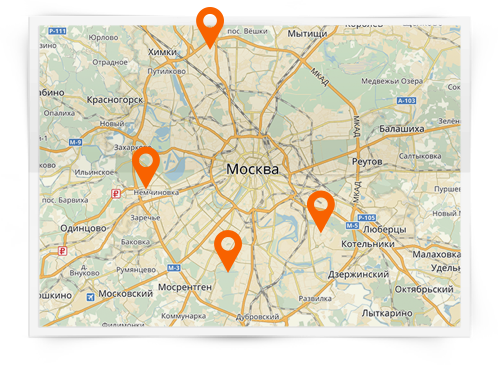

Портал TestPuls.ru — это уникальный каталог, который соответствует всем требованиям по быстрому поиску лучших диагностических центров Москвы. Это более 150 профильных клиник с высоким качеством обслуживания и расположением по всей
территории города.
Каталог видов диагностики
Портал TestPuls.ru — это более 80 видов диагностики органов человека, проводимых различными методиками. Удобный рубрикатор поможет быстро сориентироваться и выбрать необходимую услугу, вплоть до поиска по станции метро или названию
клиники.

Простота и удобство
Портал TestPuls.ru — это удобная запись на необходимый вид диагностики в выбранной вами клинике в нужное время непосредственно у нас на сайте.Это огромные преимущества, поскольку вам больше не нужно искать координаты центров диагностики
по всему Интернету и идти на процедуру «когда скажут».
Качественный сервис
Портал TestPuls.ru — это качественное обслуживание сотрудниками сайта каждого клиента, начиная от консультации, заканчивая напоминанием о визите. Постоянное развитие и совершенствование интернет-сервиса, позволяющее предоставить
вам еще больше необходимой информации и услуг.